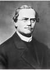

Monsieur Gregoire Mendel le Père de L'herediter
Monsieur Gregoire Mendel va essayer de nous le definir
le parcours d'un homme

Monsieur Gregoire Mendel le père de l'herediter
Monsieur Gregoire Mendel va essayer de nous le definir
le parcours d'un hommec'est quoi L'herediter?
Nous allons tanter de donner une definition harmonieuse
le parcours d'un hommeComment foctionne l'herediter?
Les germes de parents transmis aux descendants aux ascendants
le parcours d'un homme